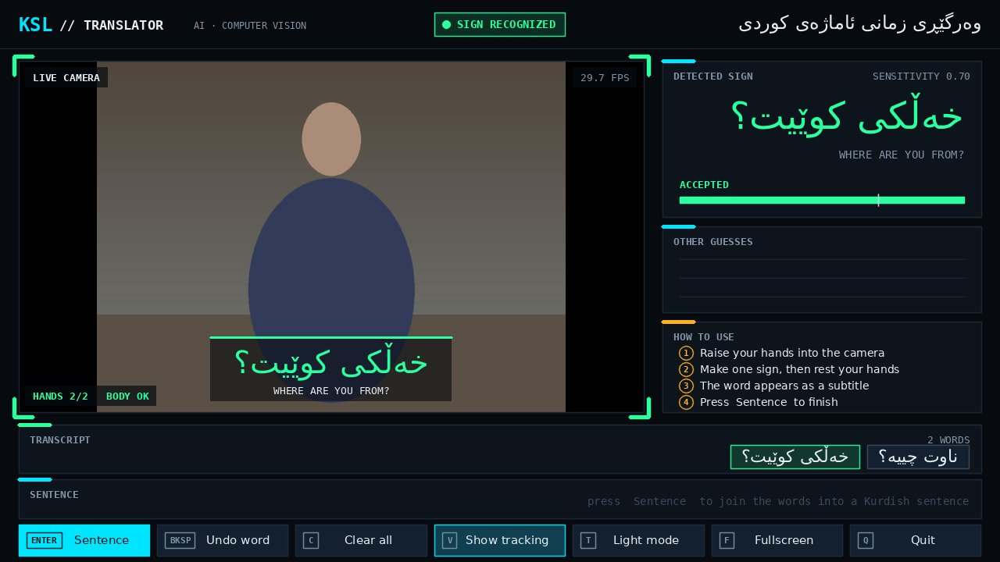
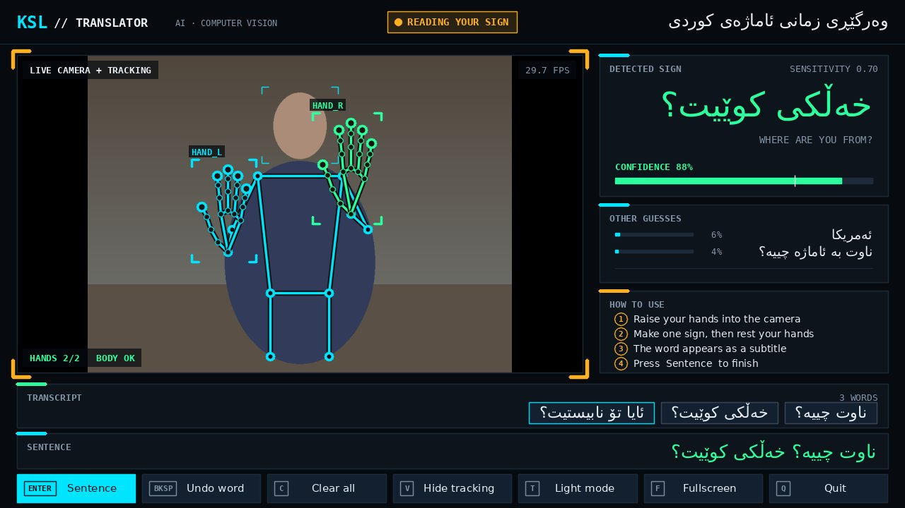
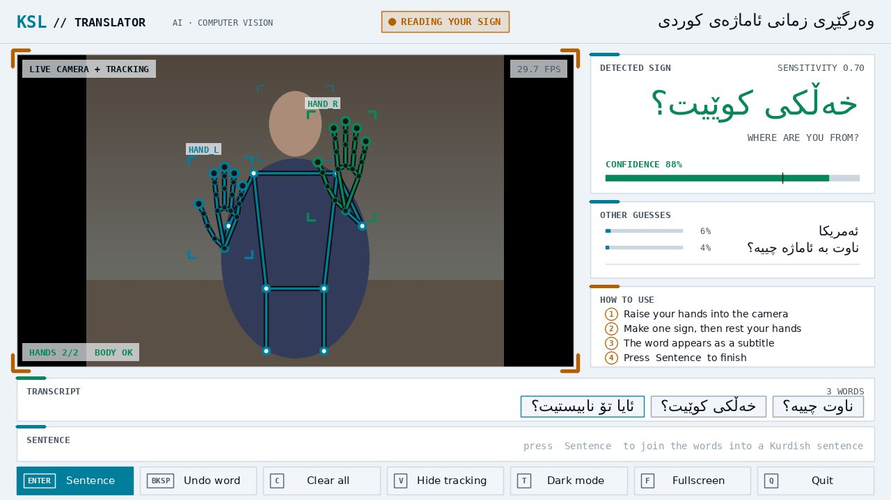

وەرگێڕی زمانی ئاماژەی کوردی
Deaf people in Kurdistan have almost no technology that understands their language. Our system watches the signer through a regular laptop webcam and turns Kurdish Sign Language into written Kurdish, in real time.

Interface preview. The person shown is an illustration; the app displays the real camera picture.
Walk up, raise your hands and sign. Everything works with a mouse click or a single key.
The signer appears exactly as the camera sees them, never cropped. Tracking runs quietly in the background.
Each recognised sign appears on the video in Kurdish, with its English meaning, like TV captions.
Signed words build a transcript, and an AI language model turns it into one natural Sorani sentence.
Switch themes in one click to suit the room, from a dark exhibition hall to a bright classroom.
Sentence, undo, clear, show tracking, theme and fullscreen, all with a keyboard shortcut too.
The app never stores camera images. Training data is saved only as landmark numbers.
Eight steps, every frame, on a normal laptop CPU with no GPU needed.
Webcam frames at about 30 per second, mirrored like a selfie.
OpenCVThe whole body plus 21 points on each hand, every frame.
MediaPipeCentered on the shoulders and scaled, so where you stand doesn't matter.
NumPy · 201 values / frameThe last 30 frames (about 1 second) form one movement sample.
30 × 201 matrixConv1D → 2 bidirectional GRU layers → dense layers learn each motion.
TensorFlow / KerasA probability for each of 26 classes: the 25 phrases plus "no sign".
SoftmaxA sign is accepted only when it stays above the confidence threshold.
One sign = one wordThe transcript is rewritten as one natural, grammatical sentence.
Claude APIPress V to draw the AI's view of the body and hands on the video, and press it again to hide it.

Dark mode, tracking shown.

Light mode, tracking shown.
Recorded by our team, about 30 samples per phrase, then augmented with changes in speed, angle, size and jitter.
You need Python 3.10–3.12 and a webcam. See the README for the full guide.
# 1. install (once) pip install -r requirements.txt # 2. record samples (SPACE records 30 in a row) python collect.py --signer yourname # 3. train the model python train.py # 4. run the translator python app.py python app.py --theme light
| ENTER | Turn the words into a Kurdish sentence |
| BKSP | Undo the last word |
| C | Clear everything |
| V | Show or hide tracking lines |
| T | Dark or light mode |
| F | Fullscreen |
| + - | Sensitivity |
| Q | Quit |